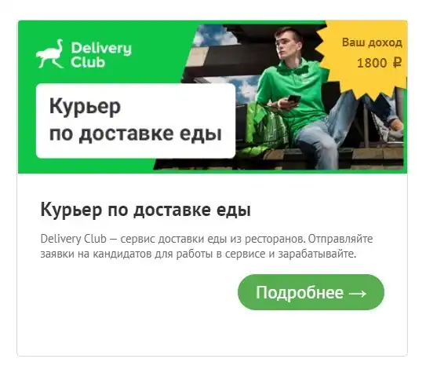
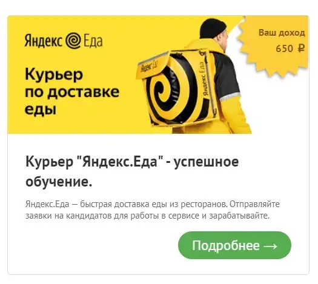
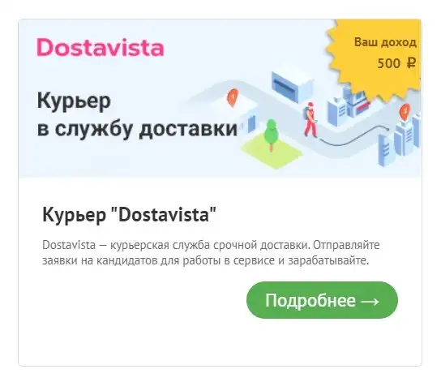
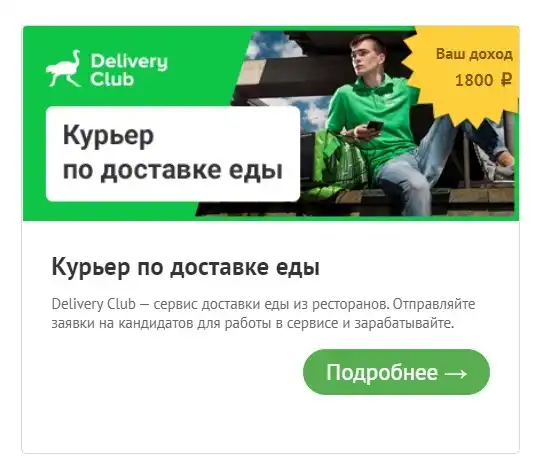
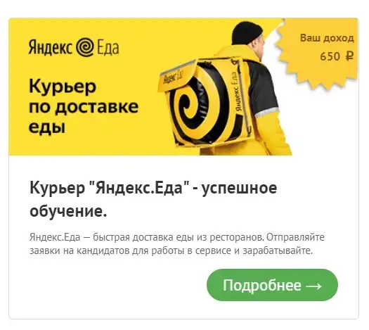
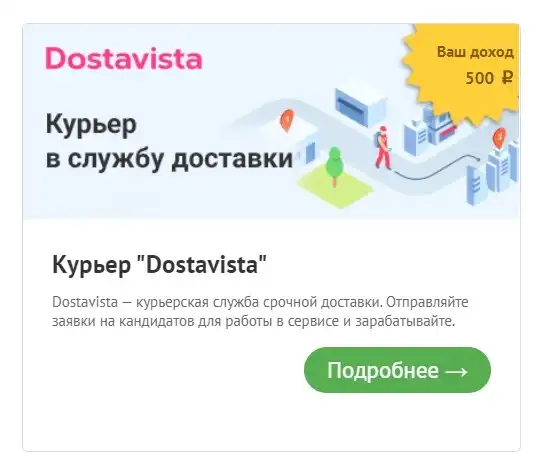
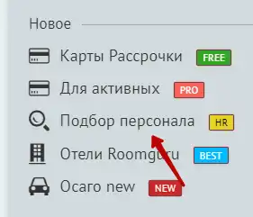
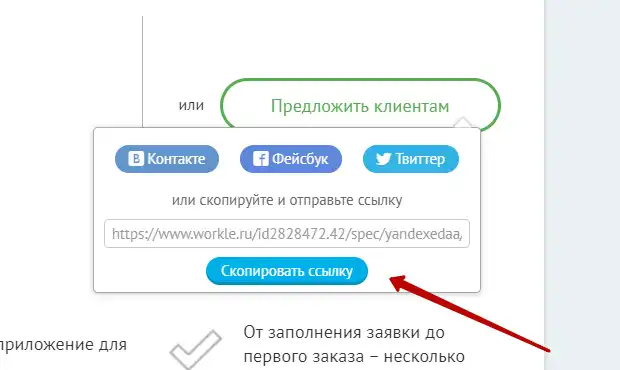

Сегодня мы поговорим о заработке на официальном партнерском сервисе Яндекс, Тинькоф и многих других ТОП компаний.
И так, на чем можно зарабатывать:
 





Как вы уже поняли, мы будем привлекать людей для начала к этим сервисам, с них проще всего начать.
И так, что нам надо:
- Аккаунт на самом Workle
- Мобильный телефон
- Аккаунт - Авито или Юла
- Банковская карта для получения своих кровных
Первое что надо сделать - зарегистрировать сам Воркл - идем по ссылке Workle регистрируемся, заполняем все данные и переходим во вкладку Подбор персонала
Далее открываем желаемую вакансию и находим кнопку Предложить клиентам

Копируем ссылку приглашения
На этом с Воркл пока все. Идем на авито и юлу, создаем вакансию о приеме на работу, расписываем очень красиво. Когда вам будут звонить или писать даем людям ссылку которую скопировали ранее и говорим что им надо заполнить анкету и с ними свяжутся менеджеры компании. Люди заполняют заявки, устраиваются на работу и вы получаете свои деньги.
Очень важно, в самой вакансии внимательно смотрите в каком регионе требуются работники, если написано что надо в Москве, вы тоже ставите в объявлении Москва.
Золотое правило - чем больше объявлений тем больше денег. Также можно использовать соц сети, чаты в мессенжерах и так далее.